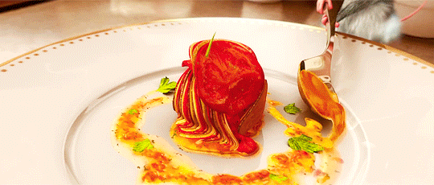

Ratatouille

Description
Hailing from Provence, a region in the south of France near the Mediterranean Sea,
ratatouille is a bright and chunky summer vegetable stew made with eggplant, zucchini,
bell peppers, and tomatoes. It is rich with the flavor of olive oil, garlic, and
fresh herbs.
Ingredients
- 1 large (1 1/4 lbs) eggplant, cut into 1/3-inch cubes
- Salt
- 6 tablespoons extra virgin olive oil, plus more for serving
- 2 medium zucchini (about 1 lb), cut into 1/3-inch cubes
- 1 medium yellow onion, finely chopped
- 1 red, orange or yellow bell pepper, cut into 1/4-inch dice
- 5 large cloves garlic, chopped
- 5 large vine-ripened tomatoes (1 3/4 lbs), cut into 1/3-inch cubes, with their juices
- 1 tablespoon tomato paste
- 2 teaspoons fresh chopped thyme, plus more for serving
- 3/4 teaspoon sugar
- 1/4 teaspoon crushed red pepper flakes (optional)
- 3 tablespoons chopped fresh basil
Steps
- Begin by heating 3 tablespoons of oil in a large nonstick pan over medium heat.
Add the eggplant and season with 1/4 teaspoon salt
- Cook, stirring frequently, until soft and starting to brown, 10 to 12 minutes.
Transfer to a plate and set aside
- Add another tablespoon of oil to the pan (no need to clean it). Add the zucchini
and cook, stirring frequently, until tender-crisp, 3 to 4 minutes
- Season with 1/4 teaspoon salt and transfer to a plate; set aside
- Add two more tablespoons of oil to the pan and add the onion and bell pepper
- Cook, stirring frequently, for about 5 minutes
- Add the garlic and continue cooking for about 3 minutes more. Do not brown.
Next, add the tomatoes, tomato paste, thyme, sugar, crushed red pepper flakes (if using)
and 3/4 teaspoon salt
- Cook, stirring occasionally, until the tomatoes are broken down into a sauce, 8 to 10 minutes
- Add the cooked eggplant to the pan; bring to a gentle boil, then reduce the heat to low, and simmer,
uncovered, for about 10 minutes or until the eggplant is soft
- Add the zucchini and cook for 1 to 2 minutes more, or until just warmed through.
Taste and adjust seasoning, if necessary
- Sprinkle with fresh basil and thyme, drizzle with a little olive oil if desired,
and serve warm or chilled